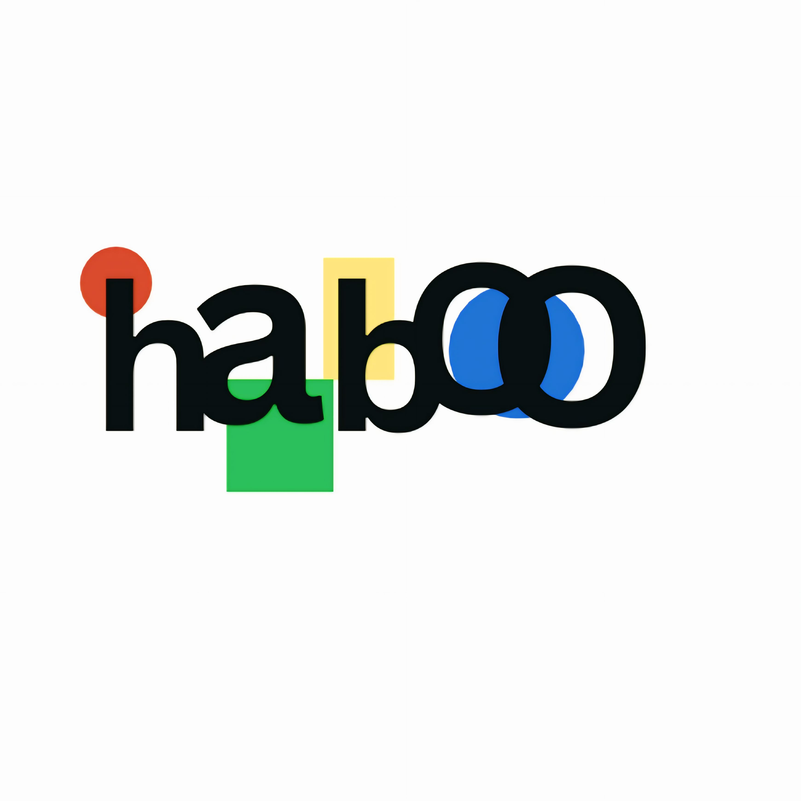

Connect both Facebook and Instagram via the Meta Graph API and pull posts, comments, and conversations into Odoo — with per-platform provider records, operator assignment, and rich URL-linked content.
provider records for Facebook and Instagram — each with its own Graph API token, page ID, page token, and operator assignment.post.post model syncs posts with captions, media URLs, permalinks, and comment threads — including sponsored post detection.instagram_post_limit setting (50–500) in General Settings controls how many posts are pulled per sync — keeping data volume manageable for high-volume accounts.text_to_url_text helper (using BeautifulSoup) converts raw post text to clickable HTML links — making captions and descriptions readable in the Odoo list view.This module connects Odoo to both Facebook and Instagram through the Meta Graph API — using a provider model that holds the Graph API credentials, page token, and user_ids (Many2many operators) for each platform. Each platform gets its own provider record — so Facebook and Instagram are always clearly separated.
The post.post model syncs posts with post ID, caption, media URL, media type, permalink, comment IDs, sponsored flag, owner, username, and platform label. A configurable post limit (50–500) controls how many are pulled per run. The text_to_url_text utility converts raw text links in captions to clickable HTML using BeautifulSoup — keeping content readable in Odoo list views.
Create a provider for each platform (Facebook / Instagram) with the Graph API token, page ID, page token, and assign operator users. The graph_api_authenticated state confirms the connection is live.
Odoo fetches posts up to the configured limit — storing post ID, caption, media URL, media type, permalink, comment IDs, owner, username, platform, and sponsored flag in post.post.
Assigned operators see new posts and comments inside Odoo — with URL-linked captions rendered readably. Rich-media conversations (image, document, audio, video) are stored in the messenger model.
One provider record per platform (Facebook or Instagram) — with Graph API token, page token, page ID, and user_ids Many2many operator assignment. Connection validated by graph_api_authenticated state.
The post.post model syncs post ID, caption, media URL, media type, permalink, comment IDs, sponsored flag, owner, username, and platform. Comment threads are stored and accessible from the post record.
instagram_post_limit in General Settings controls how many posts are fetched per sync run — range 50 to 500, keeping data volume manageable for high-frequency posting accounts.
text_to_url_text converts raw URLs in post captions to clickable <a> tags using BeautifulSoup — so long social-media captions render readably inside Odoo list and form views.
The bundled messenger model (same media type constants as the Messenger module) stores inbound conversations with image, document, audio, and video support — alongside text messages.
user_ids Many2many on each provider assigns which Odoo users are responsible for monitoring and responding to that platform's messages — keeping accountability clear.
Social media teams managing both platforms can monitor all posts and comments in one Odoo screen — with platform-separated provider records and shared operator access control.
E-commerce brands can track which posts generate the most comments, identify questions about products, and link social engagement to CRM activities — all from inside Odoo.
Marketing teams who pull social post data into reporting dashboards can use Odoo's built-in filters, groups, and exports on the synced post records — no separate social analytics tool required.
provider records for Facebook and Instagram — with separate Graph API tokens, page tokens, and operator assignmentspost.post model — post ID, caption, media URL, type, permalink, comments, sponsored flag, owner, username, platforminstagram_post_limit (50–500) from General Settingstext_to_url_text helper — converts raw URLs in captions to clickable HTML using BeautifulSoupgraph_api_authenticated state on each provider — live connection status visible at a glancestock, crm, and haboo_tata_whatsapp_integration. Requires a Meta developer app with Graph API access for both Facebook and Instagram.
Questions about installation, configuration, or customisation? We're here — just write to us.
habootechnologies@gmail.com